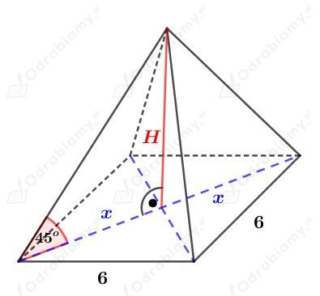

Rysunek:Â
Korzystając z funkcji sinus mamy:Â
Odczytując wartość sin30o z tabeli wybranych wartości funkcji trygonometrycznych mamy:Â
Odp. D
Rysunek:Â
Korzystając z twierdzenia Pitagorasa dla trójkąta ABS mamy:
Korzystając z twierdzenia Pitagorasa dla trójkąta BCC1 mamy:
Wyznaczmy pole powierzchni całkowitej tego graniastosłupa. Korzystając ze wzoru na pole rombu mamy: Â
Wyznaczmy pole powierzchni całkowitej tego graniastosłupa. Mamy:  Â
Odp. BÂ
Rysunek:Â

Odcinek x jest połową przekątnej kwadratu o boku długości 6. Mamy więc:
Korzystając ze związku między długościami boków w trójkącie o kątach 45o, 45o, 90o mamy:
Wyznaczmy objętość tego ostrosłupa. Mamy:
Odp. AÂ
Rysunek:Â
Wiedząc, że
mamy:
Korzystając z twierdzenia Pitagorasa mamy:
Wyznaczmy pole otrzymanego przekroju. Mamy:
Odp. DÂ Â Â Â
Dany jest ostrosłup prawidłowy sześciokątny o krawędzi podstawy długości 2 cm.Â
Podstawą tego ostrosłupa jest sześciokąt foremny o boku długości 2 cm. Sześciokąt foremny zbudowany jest z sześciu przystających trójkątów równobocznych.Â
Wyznaczmy pole powierzchni podstawy tego ostrosłupa. Korzystając ze wzoru na pole trójkąta równobocznego mamy:Â
Z treści zadania wiemy, że pole powierzchni podstawy jest dwa razy mniejsze od pola powierzchni bocznej, więc:
Wyznaczmy pole powierzchni całkowitej tego ostrosłupa. mamy:
Odp. C
Rysunek:Â
Punkt S jest środkiem krawędzi AD.Â
Korzystając ze wzoru na długość przekątnej kwadratu mamy:
Korzystając z twierdzenia Pitagorasa dla trójkąta MSP mamy:
Wyznaczmy sinus kąta 𝛼. Mamy:
Odp. AÂ Â
Rysunek:Â
Pole powierzchni podstawy tego ostrosłupa jest równe 16√3 cm2. Korzystając ze wzoru na pole trójkąta równobocznego mamy:
Trójkąt ABS jest trójkątem prostokątnym równoramiennym, zatem mamy:
Wyznaczmy pole trójkąta ABS. Mamy:
Trójkąty DEF i BSA są podobne w skali k=2. Mamy więc:
Odp. AÂ